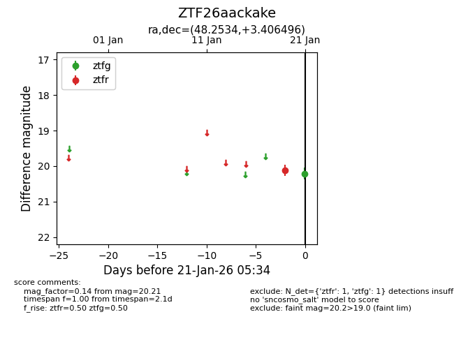
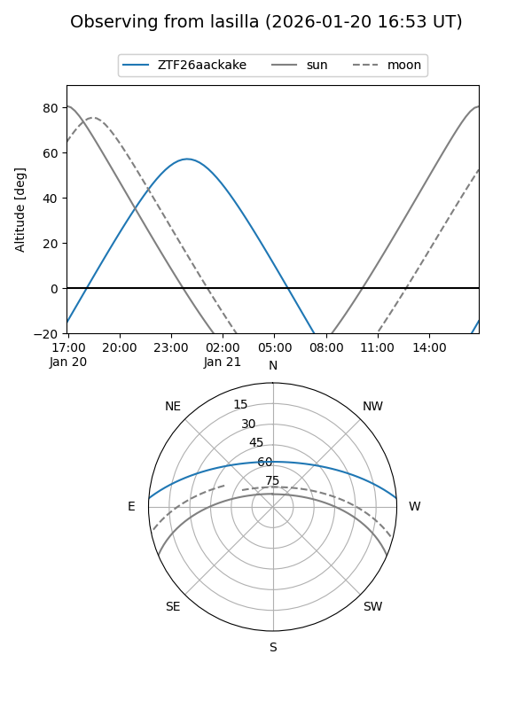
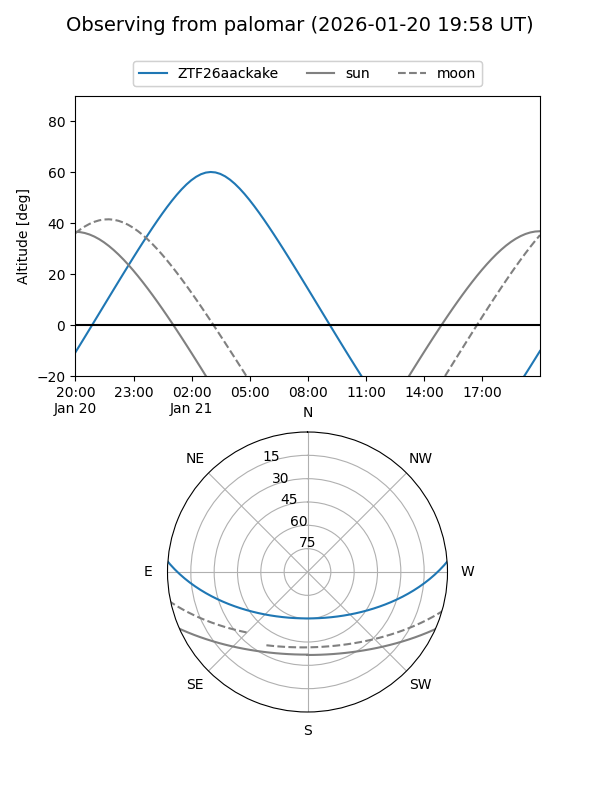

ZTF26aackake
Target ZTF26aackake at 2026-01-21 05:36
Aliases and brokers:
FINK: link
Lasair: link
ALeRCE: link
alt names
ZTF26aackake (ztf,fink_ztf)
Coordinates:
equatorial (ra, dec) = 48.2534,+3.40650
equatorial (HMS+DMS) = 03:13:00.82,+03:24:23.39
galactic (l, b) = (176.6815,-44.19738)
Flags:
Photometry:
last ztfg=20.21, ztfr=20.12
1 ztfg, 1 ztfr detections
Lightcurve

Visibility


Additional plots